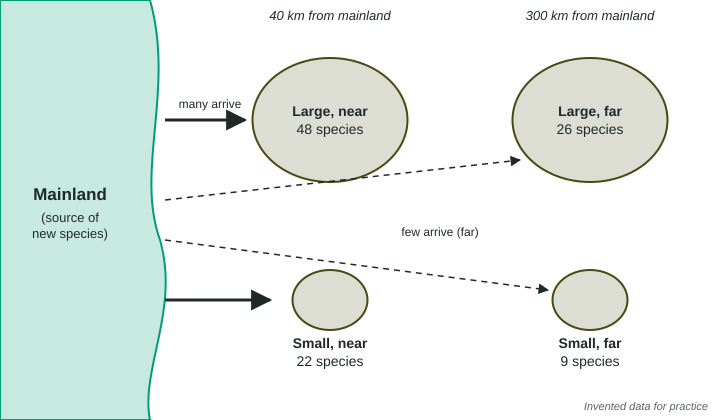

Island Biogeography
Island biogeography explains species richness on islands: larger islands hold more species because fewer species die out there, and islands nearer the mainland hold more because more colonists arrive.
Part 1 · Hook
Why this matters
Part 2 · Before you start
What this builds on
Part 3 · Prerequisite check
Quick check before you start
1. What does species richness measure?
- The number of different species in an area
- How equal the population sizes are
- The variety of genes in one population
- The total number of individuals
Show the answer
Richness is a count of species. Evenness compares their numbers.
- Correct: The number of different species in an area:
- How equal the population sizes are:
- The variety of genes in one population:
- The total number of individuals:
2. Why does a community with more species usually recover better from a drought or a disease?
- More species can take over the jobs of any species that is lost
- More species means each one is larger
- Droughts and diseases skip rich communities
- Rich communities have no predators
Show the answer
With more species, several can fill each role, so losing one changes less.
- Correct: More species can take over the jobs of any species that is lost:
- More species means each one is larger:
- Droughts and diseases skip rich communities:
- Rich communities have no predators:
Part 4 · See it
See it first

Part 5 · Step by step
How it works, step by step
- An island is close to the mainlandmore seeds, insects, birds and other colonists reach it, so new species arrive often
- An island is largeit has more habitats and larger populations, so fewer of its species die out
- Arrivals balance local losseslarge, near islands settle at the most species; small, far islands at the fewest
- A forest is cut into patches surrounded by farms or roadseach patch acts like an island, and the smallest, most isolated patches lose the most species
Part 6 · Key ideas
Key ideas
- Island biogeography studies how many species islands hold and why. Larger islands hold more species, and islands closer to the mainland hold more species.
- Distance sets how often new species arrive: far islands get fewer colonists. Size sets how often species die out: small islands have fewer habitats and smaller populations, so more species are lost.
- Habitat fragmentation breaks a large habitat into smaller, separated patches. The patches behave like islands, so small, isolated fragments lose species over time.
- Island species often evolve to use a narrow set of foods or places, because islands offer few resources. They can lose out when people bring species from elsewhere that can live on many foods.
Part 7 · Misconception
A common mistake
The wrong idea: Island biogeography only applies to islands in the ocean.
What actually happens: Any patch of habitat surrounded by something its species cannot live in acts like an island: a lake, a mountaintop, a park in a city, or a forest patch between farms.
Part 8 · Check yourself
Check yourself
Exam-style questions. Anything you miss goes into your review queue.
Data
Bird species on six islands
| Island | Area (km²) | Distance from mainland (km) | Bird species |
|---|---|---|---|
| 1 | 1,000 | 20 | 60 |
| 2 | 1,000 | 300 | 30 |
| 3 | 100 | 20 | 28 |
| 4 | 100 | 300 | 12 |
| 5 | 10 | 20 | 13 |
| 6 | 10 | 300 | 5 |
1. Which two islands best show the effect of distance from the mainland on its own?
- Islands 1 and 2
- Islands 1 and 3
- Islands 2 and 3
- Islands 1 and 6
Show the answer
To see the effect of one variable, compare islands that match on the other. Islands 1 and 2 (or 3 and 4, or 5 and 6) differ only in distance.
- Correct: Islands 1 and 2: Right: both are 1,000 km², so only distance differs, and the near island has twice as many species.
- Islands 1 and 3: Islands 1 and 3 are both 20 km away; they differ in area, not distance.
- Islands 2 and 3: Islands 2 and 3 differ in both area and distance, so the effect of distance cannot be separated.
- Islands 1 and 6: Islands 1 and 6 differ in both area and distance.
2. For the three islands 20 km from the mainland, how does the number of bird species change as area increases?
- It increases tenfold each time area grows tenfold
- It roughly doubles each time area grows tenfold
- It stays about the same
- It decreases as area increases
Show the answer
Larger islands hold more species, but richness rises much more slowly than area.
- It increases tenfold each time area grows tenfold: Species went from 13 to 28 to 60, about double each step, not ten times.
- Correct: It roughly doubles each time area grows tenfold: Right: 10 km² has 13 species, 100 km² has 28, 1,000 km² has 60, each about twice the last.
- It stays about the same: It rises from 13 to 60.
- It decreases as area increases: Larger islands have more species in this table.
3. Write the setup for the percent change in the number of bird species from island 4 to island 2, both 300 km from the mainland, then give the answer.
Type the setup as on the exam, with brackets and units, then the answer.
Show the answer
Start at island 4 (12 species) and go to island 2 (30 species): . A tenfold larger island at the same distance holds 150% more species.
- Setup: ; answer 150 %
4. A seventh island in the same sea is 100 km² and 150 km from the mainland. Which number of bird species is the best prediction?
- About 60
- About 5
- About 20
- About 40
Show the answer
Match the area first (islands 3 and 4), then place the new island between them by distance.
- About 60: Sixty is the count for a large, near island; this one is ten times smaller.
- About 5: Five is the count for a small, far island; this one is ten times larger.
- Correct: About 20: Right: at 100 km² it should fall between island 3 (28, near) and island 4 (12, far).
- About 40: Forty is more than the 100 km² island right next to the mainland has.
Model or diagram
Four islands off one coast
5. Species reach the large near island and the small near island equally easily, yet the small one has fewer species. Which explanation fits the island model?
- Smaller populations and fewer habitats, so more species die out
- Fewer colonists can find a small island in the sea
- Small islands are too young to have species yet
- Small islands get less rain than the large islands near them
Show the answer
In the island model, size sets the extinction side and distance sets the arrival side.
- Correct: Smaller populations and fewer habitats, so more species die out: Right: size controls how often species are lost; small populations are easily wiped out.
- Fewer colonists can find a small island in the sea: Both near islands receive many colonists in the diagram, shown by the solid arrows.
- Small islands are too young to have species yet: Island age is not shown and is not part of this explanation.
- Small islands get less rain than the large islands near them: Rain is not shown, and size works through habitats and population size.
6. What do the dashed arrows in the diagram represent?
- Species leaving the islands for the mainland
- Few colonists reaching the far islands
- Storms that wash species off the far islands
- Species that died out on the far islands
Show the answer
Solid arrows show many arrivals at near islands; dashed arrows show few arrivals at far islands.
- Species leaving the islands for the mainland: The arrows point from the mainland to the islands.
- Correct: Few colonists reaching the far islands: Right: the label says few arrive, and the arrows run to the far islands.
- Storms that wash species off the far islands: The arrows show arrivals of colonists, not storms.
- Species that died out on the far islands: Die-outs are not drawn as arrows; arrivals are.
7. A forest is cleared for farms, leaving patches of 5, 50 and 500 hectares far apart from each other. Twenty years later, which patch most likely keeps the most of its original species?
- The 5-hectare patch
- The 50-hectare patch
- They keep the same share, because the patches are equally isolated
- The 500-hectare patch
Show the answer
Habitat fragments act like islands: larger ones keep more species.
- The 5-hectare patch: The smallest patch has the smallest populations and is most likely to lose species.
- The 50-hectare patch: It is larger than the smallest patch but ten times smaller than the largest.
- They keep the same share, because the patches are equally isolated: Isolation is similar, but area differs, and area affects how many species are lost.
- Correct: The 500-hectare patch: Right: larger fragments hold larger populations and more habitats, so fewer species are lost.
Part 9 · Summary
Summary
Part 10 · Up next
What comes next
Part 11 · Connections